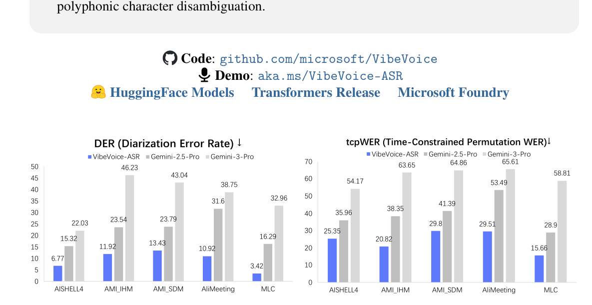
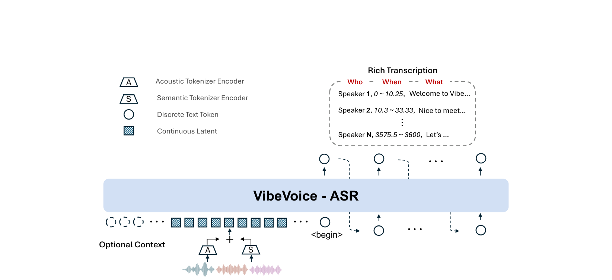
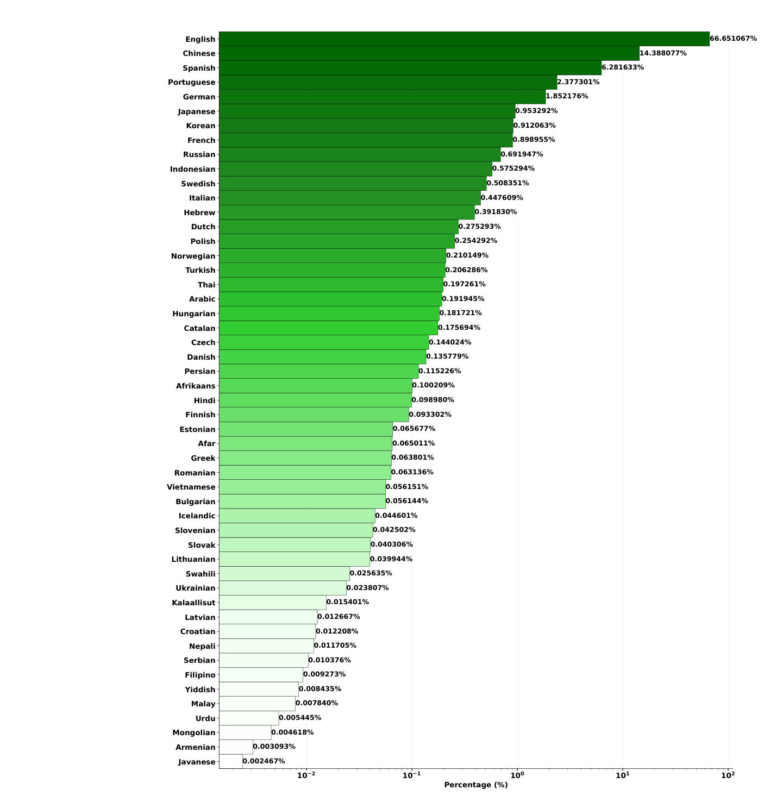

Zhiliang Peng∗, Jianwei Yu∗, Yaoyao Chang∗, Zilong Wang∗, Li Dong∗ Yingbo Hao, Yujie Tu, Chenyu Yang, Wenhui Wang, Songchen Xu, Yutao Sun Hangbo Bao, Weijiang Xu, Yi Zhu, Zehua Wang, Ting Song, Yan Xia, Zewen Chi Shaohan Huang, Liang Wang, Chuang Ding, Shuai Wang, Xie Chen, Furu Wei⋄ Microsoft Research https://aka.ms/GeneralAI This report presents VIBEVOICE-ASR, a general-purpose speech understanding framework built upon VIBEVOICE [PYW+25], designed to address the persistent challenges of context fragmentation and multi-speaker complexity in long-form audio (e.g., meetings, podcasts) that remain despite recent advancements in short-form speech recognition. Unlike traditional pipelined approaches that rely on audio chunking, VIBEVOICE-ASR supports single-pass processing for up to 60 minutes of audio. It unifies Automatic Speech Recognition, Speaker Diarization, and Timestamping into a single end-to-end generation task. In addition, VIBEVOICE-ASR supports over 50 languages, requires no explicit language setting, and natively handles code-switching within and across utterances. Furthermore, we introduce a prompt-based context injection mechanism that allows users to supply customized conetxt, significantly improving accuracy on domain-specific terminology and polyphonic character disambiguation.
Code: github.com/microsoft/VibeVoice Demo: aka.ms/VibeVoice-ASR HuggingFace Models Transformers Release Microsoft Foundry DER (Diarization Error Rate) ↓ VibeVoice-ASR Gemini-2.5-Pro Gemini-3-Pro
50 46.23 43.04 45 38.75 40 32.96 35 31.6 30 23.54 23.79 22.03 25 20 16.29 15.32 11.92 13.43 15 10.92 6.77 10 3.42 5 0AISHELL4 AMI_IHM AMI_SDM AliMeeting MLC tcpWER (Time-Constrained Permutation WER)↓ VibeVoice-ASR Gemini-2.5-Pro Gemini-3-Pro
70 63.65 64.86 65.61 58.81 60 54.17 53.49 50 35.96 38.35 41.39 40 29.8 29.51 28.9 30 25.35 20.82 15.66 20 10 0AISHELL4 AMI_IHM AMI_SDM AliMeeting MLC

图Figure 1: VIBEVOICE-ASR sets a new state-of-the-art for long-form speech understanding, consistently outperforming strong closed-source multimodal models (Gemini-2.5/3-Pro) across five public benchmarks. The results demonstrate superior accuracy in both speaker attribution (DER) and time-aligned transcription (tcpWER), particularly in complex multi-speaker environments.
1 引言Introduction
Recent years have witnessed a paradigm shift in speech processing, driven by the integration of Large Language Models (LLMs) with acoustic encoders [CXZ+23]. While these large audio models ∗Core contributors. ⋄Contact person: fuwei@microsoft.com.
近年来，大语言模型（LLM）与声学编码器的结合 [CXZ+23] 推动了语音处理的一次范式转变。尽管这些大规模音频模型 ∗核心贡献者。⋄通讯作者：fuwei@microsoft.com。
A S Rich Transcription Who When What Welcome to Vibe…
S 富转录（Rich Transcription） 谁 何时 说了什么 欢迎来到 Vibe…
Speaker 1, 0 ~ 10.25, Speaker 2, 10.3 ~ 33.33,Nice to meet…
…
…Speaker N, 3575.5 ~ 3600, Let’s …
说话人 N，3575.5 ~ 3600，让我们…
VibeVoice - ASRVibeVoice - ASR
+A S Optional Context 60-minute Long-form Audio <begin>
（图 1 标签：+ A / S；可选上下文（Optional Context）；60 分钟长音频（60-minute Long-form Audio）；<begin>。）

图Figure 2: The architectural overview of VIBEVOICE-ASR. VIBEVOICE-ASR processes 60-minute long-form audio in a single pass by ingesting continuous latents from dual-tokenizers alongside optional user-provided context. The output is a generated stream of Rich Transcription, explicitly interleaving Speaker ID (Who), Timestamps (When), and Content (What)
图 2：VIBEVOICE-ASR 的架构总览。VIBEVOICE-ASR 通过同时摄入双分词器输出的连续潜向量与用户可选提供的上下文，在单趟内处理 60 分钟的长音频。输出是一条生成的富转录（Rich Transcription）流，显式地交错排列说话人 ID（谁）、时间戳（何时）与内容（什么）。
have achieved remarkable success in short-form speech recognition, transcribing and analyzing longform audio—such as hour-long meetings, podcasts, and academic lectures—remains a formidable challenge.
尽管这批模型在短音频语音识别上取得了显著成功，转写和分析长音频——例如一小时长的会议、播客和学术讲座——仍然是一项艰巨的挑战。
The prevailing approach to long-form audio involves cascaded pipelines that segment continuous speech into short clips (typically < 30 seconds) for independent processing [HSW+24, BHHZ23, BYC+20]. While practical, this "divide-and-conquer" strategy suffers from two fundamental limitations: Context Fragmentation and Pipeline Complexity. First, independently processing segments severs global semantic dependencies, causing the model to lose track of cross-sentence context, which is fatal for disambiguating homophones or resolving coreferences in extended dialogue. Second, traditional systems treat Automatic Speech Recognition (ASR), Speaker Diarization, and Timestamping as separate tasks managed by disjoint models. Reconciling their outputs often requires complex heuristics, leading to error propagation where a failure in segmentation or diarization corrupts the final transcript.
目前处理长音频的主流做法是级联流水线：先把连续语音切成短片段（通常不足 30 秒），再分别独立处理 [HSW+24, BHHZ23, BYC+20]。这种「分而治之」策略虽然实用，但存在两个根本性缺陷：上下文碎片化与流水线复杂性。其一，各片段独立处理切断了全局语义依赖，模型无法追踪跨句子的上下文，而这对消歧同音词或消解长对话中的指代是致命的。其二，传统系统把自动语音识别（ASR）、说话人分离（diarization）和时间戳预测当作三个彼此独立的任务，分别由不同模型负责。对齐这些模块的输出往往需要复杂的启发式规则，从而导致误差传播——分段或说话人分离中的一次失败就会污染最终转录稿。
To bridge this gap, we introduce VIBEVOICE-ASR, a unified, general-purpose framework designed for high-fidelity long-form speech understanding. Built upon the VibeVoice architecture [PYW+25], our system fundamentally abandons the sliding-window paradigm in favor of a single-pass approach. By leveraging an ultra-low frame rate tokenizer (7.5 Hz), VIBEVOICE-ASR compresses an hour of audio into a sequence length that fits comfortably within the context window of modern LLMs. This allows the model to attend to the entire global context of a 60-minute session simultaneously, ensuring semantic coherence and consistent speaker tracking without the need for external clustering algorithms. Concurrent with the development of VIBEVOICE-ASR, a number of related research efforts have emerged [HSZ26, YCD+25, SXF+25, YLY+26]. Nevertheless, the majority of these works have not made their models publicly available.
为了弥合这一差距，我们提出 VIBEVOICE-ASR：一个面向高保真长音频语音理解的统一、通用框架。该系统基于 VibeVoice 架构 [PYW+25] 构建，从根本上抛弃了滑动窗口范式，转而采用单趟（single-pass）处理。借助一种超低帧率的分词器（7.5 Hz），VIBEVOICE-ASR 把一小时的音频压缩成一段可以轻松放入现代 LLM 上下文窗口的序列。这使模型能够同时关注一场 60 分钟会话的全部全局上下文，保证语义连贯与一致的说话人追踪，而无需任何外部聚类算法。在 VIBEVOICE-ASR 研发的同时，也涌现出一批相关研究工作 [HSZ26, YCD+25, SXF+25, YLY+26]。不过，这些工作中的大多数并未公开其模型。
VIBEVOICE-ASR reformulates long-form transcription as an end-to-end generation task, as shown in Figure 2. Instead of outputting plain text, it generates a structured Rich Transcription stream that explicitly interleaves speaker identities (“Who"), precise timestamps (“When"), and speech content (“What"). Furthermore, acknowledging the diverse needs of real-world applications, we introduce a prompt-based context injection mechanism. This allows users to supply customized context—ranging from hotword lists to background descriptions—significantly enhancing the model’s ability to recognize domain-specific terminology and handle complex code-switching scenarios.
如 Figure 2 所示，VIBEVOICE-ASR 把长音频转录重新表述为一个端到端的生成任务。它不输出纯文本，而是生成一条结构化的富转录（Rich Transcription）流，显式地交错编码说话人身份（「谁」）、精确时间戳（「何时」）和语音内容（「什么」）。此外，考虑到真实应用中的多样化需求，我们引入了一种基于提示（prompt）的上下文注入机制。它允许用户提供自定义上下文——从热词列表到背景描述——显著增强模型识别领域专有术语以及处理复杂语码混合（code-switch）场景的能力。
2 方法Method
2.1 概览Overview
Figure 2 presents the architectural overview of VIBEVOICE-ASR. We formulate long-form speech understanding as a language modeling task. The model takes a sequence of continuous audio embeddings, encoded from from the pre-trained Acoustic and Semantic encoders, as its primary input. To enable context-aware capabilities, optional text prompts (e.g., hotwords or background information) can be prepended to the audio sequence.
Figure 2 展示了 VIBEVOICE-ASR 的架构总览。我们把长音频语音理解表述为一个语言建模任务。模型以一串连续音频嵌入作为主要输入，这些嵌入由预训练的声学（Acoustic）与语义（Semantic）编码器编码得到。为获得上下文感知能力，可在音频序列之前拼接可选的文本提示（例如热词或背景信息）。
These inputs are processed by a decoder-only Large Language Model backbone (e.g., Qwen 2.5 [YYZ+24]) to autoregressively generate the target sequence. Distinct from conventional ASR models that output plain text, VIBEVOICE-ASR is designed to produce a Rich Transcription. As illustrated in the output stream of Figure 2, the model generates a structured sequence that explicitly interleaves speaker identity (“Who”), temporal boundaries (“When”), and speech content (“What”), enabling simultaneous recognition, diarization, and timestamping in a single pass.
这些输入由一个仅解码器（decoder-only）的大语言模型骨干（如 Qwen 2.5 [YYZ+24]）处理，以自回归方式生成目标序列。与输出纯文本的传统 ASR 模型不同，VIBEVOICE-ASR 被设计为产出富转录（Rich Transcription）。如 Figure 2 输出流所示，模型生成的结构化序列显式地交错排列说话人身份（「谁」）、时间边界（「何时」）与语音内容（「什么」），从而在单趟内同时完成识别、说话人分离与时间戳预测。
2.2 语音分词器Speech Tokenizer
In this work, we directly employ the pre-trained dual-tokenizers from VIBEVOICE [PYW+25], which integrates an Acoustic Tokenizer for spectral fidelity and a Semantic Tokenizer for linguistic alignment. The Acoustic tokenizer, inspired by σ-VAE [SBW+24], applies a hierarchical design with a cumulative 3200× downsampling rate to the 24 kHz input, yielding an extremely compact representation of approximately 7.5 tokens per second. Meanwhile, the Semantic module extracts deterministic content features aligned with textual semantics. Note we only use tokenizer encoders here. This ultra-low frame rate is pivotal, as a one-hour continuous audio session translates to:
本工作直接复用来自 VIBEVOICE [PYW+25] 的预训练双分词器：一个声学分词器（Acoustic Tokenizer）负责频谱保真，一个语义分词器（Semantic Tokenizer）负责语言对齐。声学分词器受 σ-VAE [SBW+24] 启发，采用层级化设计，对 24 kHz 输入施加累计 3200× 的下采样率，得到每秒约 7.5 个 token 的极致紧凑表示。同时，语义模块提取与文本语义对齐的确定性内容特征。注意，这里只使用两个分词器的编码器部分。这一超低帧率是关键所在：一段一小时的连续音频会话会被换算为：
3600 seconds × 7.5 tokens/sec = 27, 000 tokens, (1)which fits comfortably within the single-pass context window of modern LLMs.
这个长度可以从容地放进现代 LLM 的单趟上下文窗口之内。
2.3 VIBEVOICE-ASRVIBEVOICE-ASR
2.3.1 预训练Pre-training
We use the data processing pipeline proposed in VIBEVOICE [PYW+25, YCB+24] to obtain the initial data corpus. The pre-training data distribution can be found in Figure 3. The pipeline consists of three stages: segmentation and transcription, diarization, and quality filtering. Long recordings are first segmented using Silero voice activity detection (VAD) into clips of up to 30 seconds, followed by transcription with Whisper-large-v3-turbo [RKX+23] to obtain punctuated text and word-level timestamps; segment boundaries are further refined by splitting at punctuation end timestamps (e.g., [.?!]) to better align with speaker turns. Speech diarization is then performed using the vblinkp model from the WeSpeaker toolkit [WLW+23], where speaker embeddings are extracted from overlapping frames (1.5 s window, 0.75 s hop), clustered with HDBSCAN [CMS13], and refined by merging clusters whose centroids have a cosine similarity greater than 0.67, yielding final speaker turn annotations. Finally, to ensure annotation reliability, segments are re-transcribed using a secondary ASR model [XJM+23], and recordings are discarded if more than 30% of segments have a WER exceeding 20%, if speech accounts for less than 60% of the total duration.
我们采用 VIBEVOICE [PYW+25, YCB+24] 提出的数据处理流水线来构建初始数据语料。预训练数据的分布见 Figure 3。该流水线包含三个阶段：分段与转录、说话人分离，以及质量过滤。长录音首先用 Silero 语音活动检测（VAD）切成最长 30 秒的片段，随后用 Whisper-large-v3-turbo [RKX+23] 转录，得到带标点的文本和词级时间戳；片段边界再按标点结束时间戳（如 [.?!]）做切分精修，以更好地对齐说话人轮换。随后用 WeSpeaker 工具包 [WLW+23] 中的 vblinkp 模型做说话人分离：从重叠帧（1.5 秒窗口、0.75 秒步长）中提取说话人嵌入，用 HDBSCAN [CMS13] 聚类，再合并质心余弦相似度大于 0.67 的簇，得到最终的说话人轮换标注。最后，为保证标注可靠性，用第二个 ASR 模型 [XJM+23] 对所有片段做复读转录：若某条录音中超过 30% 的片段 WER 超过 20%，或语音占比低于总时长的 60%，则丢弃该录音。
To ensure the effectiveness of the data processing pipeline, we conducted a comparative study between our pipeline and two widely adopted audio processing pipelines, WhisperX [BHHZ23] and Emilia [HSW+24]. The evaluation is performed on three commonly used public multi-speaker meeting datasets—AMI [CAB+05], AliMeeting [YZF+22], and AISHELL-4 [FCL+21]—and reports both diarization error rate (DER) and diarization invariant word error rate (WER). For a fair comparison, we disable the data-filtering module in Emilia, as its default configuration removes a substantial portion of the audio samples.
为验证该数据处理流水线的有效性，我们把它与两条被广泛采用的音频处理流水线——WhisperX [BHHZ23] 和 Emilia [HSW+24]——做了对比研究。评测在三个常用的公开多说话人会议数据集——AMI [CAB+05]、AliMeeting [YZF+22] 和 AISHELL-4 [FCL+21]——上进行，同时报告说话人分离错误率（DER）与说话人分离不变词错误率（WER）。为公平比较，我们关闭了 Emilia 的数据过滤模块，因为其默认配置会移除相当一部分音频样本。
As shown in Table 1, the proposed data pipeline consistently achieves lower DER and WER than both baseline systems across the majority of evaluated datasets. These results indicate that our pipeline provides more robust segmentation, diarization, and transcription performance under diverse acoustic conditions.
如 Table 1 所示，我们提出的数据流水线在绝大多数评测数据集上都取得了比两条基线更低的 DER 和 WER。这些结果表明，在多样的声学条件下，我们的流水线提供了更鲁棒的分段、说话人分离与转录性能。
Table 1: DER and WER comparison across different data pipelines. Model AISHELL4 AMI-IHM AMI-SDM AliMeeting DER WER DER WER DER WER DER WER
表 1：不同数据管线下的 DER 与 WER 对比。表头：Model × AISHELL4（DER/WER）× AMI-IHM（DER/WER）× AMI-SDM（DER/WER）× AliMeeting（DER/WER）。
| Model | AISHELL4 | AMI-IHM | AMI-SDM | AliMeeting | ||||
|---|---|---|---|---|---|---|---|---|
| DER | WER | DER | WER | DER | WER | DER | WER | |
| WhisperX | 14.55 | 29.69 | 18.27 | 24.12 | 23.05 | 39.65 | 35.53 | 36.62 |
| Emilia | 16.58 | 49.40 | 35.44 | 47.85 | 46.55 | 61.70 | 25.57 | 54.27 |
| Ours pipeline | 16.93 | 18.99 | 15.46 | 23.22 | 17.78 | 28.40 | 25.34 | 30.82 |
We employed a curriculum learning strategy for the LLM input sequence length, progressively increasing from 8,192 to 65,536 tokens.
我们对 LLM 输入序列长度采用课程学习策略，从 8,192 逐步增加到 65,536 个 token。
2.3.2 监督微调（SFT）Supervised Fine-Tuning (SFT)
Since the pre-training stage predominantly relies on pseudo-labeled data, the SFT phase is critical for aligning the model with precise instruction-following behaviors. We carefully curate a high-quality dataset composition strategy, categorized into three distinct sources:
由于预训练阶段主要依赖伪标注数据，SFT（监督微调）阶段对于让模型对齐精确的指令遵循行为至关重要。我们精心设计了一套高质量数据集配比策略，分为三个不同来源：
高质量语音与音乐基准。High-Quality Speech and Music Benchmarks.
To establish a robust baseline for conversational speech recognition and speaker diarization, we utilize established datasets including the training splits of MLC-SLM [MGS+25] and Fisher [CMW04]. These provide high quality labels for multi-speaker interactions. Additionally, we incorporate the open-source synthesized music dataset Muse [JCX+26] as an independent subset. The inclusion of this music data allows the model to learn music-specific acoustic features, explicitly optimizing its performance and robustness when handling musical segments.
为会话语音识别与说话人分离建立坚实的基线，我们使用了一批成熟数据集，包括 MLC-SLM [MGS+25] 与 Fisher [CMW04] 的训练集划分。这些数据集为多说话人交互提供了高质量的标注。此外，我们还引入开源合成音乐数据集 Muse [JCX+26] 作为一个独立子集。音乐数据的加入让模型能够学习音乐特有的声学特征，显式优化其在处理音乐片段时的性能与鲁棒性。
上下文感知的合成数据流水线。Context-Aware Synthetic Data Pipeline.
A key capability of VIBEVOICE-ASR is utilizing user-provided Contextual Information—ranging from specific entities to complete sentences and background descriptions—to guide recognition. To bridge the lack of such paired data in real-world scenarios, we constructed a synthetic pipeline:
VIBEVOICE-ASR 的一项关键能力，是利用用户提供的上下文信息——从特定实体到完整句子乃至背景描述——来引导识别。为弥补真实场景中此类配对数据的匮乏，我们构建了一条合成数据流水线：
• Context-Driven Script Generation: We employ GPT-5 [SFP+25] to generate complex dialogue scripts containing specific entities, technical terms, and cross-lingual content (English, Chinese, and intra-sentential code-switching). Crucially, GPT-5 simultaneously generates the corresponding contextual reference text (e.g., keyword lists, related sentences, or background paragraphs) used to prompt the ASR model. • Audio Synthesis: We leverage the VIBEVOICE engine to synthesize high-fidelity multispeaker audio. The synthesis predominantly targets Chinese, English, and complex EnglishChinese code-switching scenarios, fully exploiting VIBEVOICE’s superior capabilities in modeling these specific linguistic distributions and transitions. • Quality Filtering: We perform a closed-loop verification where the synthesized speech is transcribed back; samples exceeding a WER threshold are discarded to prevent noise injection. After that, we obtains about 6,000 hours synthesized audio.
• 上下文驱动的脚本生成：我们使用 GPT-5 [SFP+25] 生成包含特定实体、技术术语和跨语言内容（英语、中文，以及句内语码混合）的复杂对话脚本。关键在于，GPT-5 会同时生成对应的上下文参考文本（如关键词列表、相关句子或背景段落），作为 ASR 模型的提示。• 音频合成：我们利用 VIBEVOICE 引擎合成高保真多说话人音频。合成主要面向中文、英文以及复杂的中英语码混合场景，充分利用 VIBEVOICE 在刻画这些特定语言分布与语言切换上的优势。• 质量过滤：我们执行闭环校验——把合成语音再转录回来，丢弃 WER 超过阈值的样本，以防注入噪声。此后，我们获得了约 6,000 小时的合成音频。
长音频转录修复。Long-Form Transcription Restoration.
Existing high-quality datasets are predominantly short (<30 minutes), creating a distribution shift for long-form applications. While we recall long-duration samples (>50 minutes) from our pre-training corpus, their original transcriptions—derived from our chunk-wise pipelines—also suffer from context fragmentation. To address this, we employ GPT-5 as a text refiner to rewrite and merge disjointed transcriptions into coherent, globally consistent long texts ("Global Semantic Rectification").
现有高质量数据集大多偏短（不足 30 分钟），这对长音频应用造成了分布偏移。虽然我们从预训练语料中召回了长时长样本（超过 50 分钟），但其原始转录来自分段流水线，同样受到上下文碎片化的影响。为此，我们使用 GPT-5 作为文本精修器，把零散割裂的转录改写并合并为连贯、全局一致的长文本（「全局语义修复」）。
Furthermore, to handle the non-speech intervals inherent in long-duration recordings, we utilize GPT-Audio2 to automatically annotate these segments with general acoustic tags. Specifically, we label events such as [Unintelligible Speech], [Music], [Human Sounds], [Environmental Sounds], [Noise], and [Silence]. This explicit tagging strategy provides direct supervision for non-speech intervals, designed to prevent the model from hallucinating text during silence or background noise.
此外，为处理长录音中固有的非语音间隔，我们利用 GPT-Audio2 自动为这类片段标注通用声学标签。具体标注的事件包括 [Unintelligible Speech]（不可懂语音）、[Music]（音乐）、[Human Sounds]（人声）、[Environmental Sounds]（环境声）、[Noise]（噪声）与 [Silence]（静音）。这一显式标注策略为非语音区间提供了直接监督，旨在防止模型在静音或背景噪声期间凭空幻读出文字。
2https://platform.openai.com/docs/models/gpt-4o-audio-preview To balance the VIBEVOICE-ASR’s capabilities across standard recognition, music robustness, context awareness, and long-form coherence, we apply a strategic data mixing ratio. Specifically, the sampling weights for Standard Benchmarks, Music Data, Synthetic Data, and Refined Long-Form Data are set
2https://platform.openai.com/docs/models/gpt-4o-audio-preview 为在标准识别、音乐鲁棒性、上下文感知与长文本连贯性之间取得平衡，我们采用了战略性的数据混合配比。具体而言，标准基准、音乐数据、合成数据与精修长文本数据的采样权重分别设为 0.5 : 0.1 : 0.1 : 0.3。
to 0.5 : 0.1 : 0.1 : 0.3, respectively.3 实验结果Results
We follow the MeetEval3 evaluation protocol and report four complementary metrics that capture different aspects of multi-speaker transcription quality.
我们遵循 MeetEval3 评测协议，报告四个互补的指标，分别刻画多说话人转写质量的不同侧面。
Diarization Error Rate (DER) measures the accuracy of speaker attribution by accounting for speaker confusion, missed speech, and false alarm speech, and thus directly evaluates the model’s ability to answer who speaks when.
说话人分离错误率（DER）通过统计说话人混淆、漏检语音与虚警语音来衡量说话人归属的准确度，因此直接评估模型回答「谁在何时说话」的能力。
Word Error Rate (WER) ignores speaker labels and timing information and computes the standard word-level error rate over the entire transcription, serving as a measure of pure speech recognition accuracy (what) independent of diarization performance.
词错误率（WER）忽略说话人标签与时间信息，对整段转录计算标准的词级错误率，用来衡量与说话人分离无关的纯语音识别精度（「说了什么」）。
Concatenated minimum-Permutation WER (cpWER) evaluates transcription accuracy under speaker permutation invariance by concatenating all utterances belonging to the same speaker and computing the minimum WER over all possible speaker permutations; this metric jointly reflects content recognition accuracy and speaker consistency, while being insensitive to local time alignment errors.
拼接最小置换词错误率（cpWER）在说话人置换不变的条件下评估转录准确率：把同一说话人的所有语句拼接起来，在所有可能的说话人置换上取最小 WER；该指标同时反映内容识别精度与说话人一致性，但对局部时间对齐误差不敏感。
Time-Constrained minimum-Permutation WER (tcpWER) further extends cpWER by enforcing temporal alignment constraints, such that words are only matched if they occur within a predefined temporal collar, making tcpWER sensitive to both speaker attribution and word-level timing accuracy and thus jointly evaluating who, what, and when.
时间约束最小置换词错误率（tcpWER）在 cpWER 基础上进一步施加时间对齐约束：只有当词语出现在预定义的时间容差窗口内时才参与匹配，因此 tcpWER 同时对说话人归属和词级时间精度敏感，从而联合评估「谁、什么、何时」。
We select Gemini-2.5-Pro and Gemini-3-Pro as comparison baselines, as they represent state-of-theart large-scale multimodal foundation models capable of jointly predicting timestamps, speaker labels, and transcription content. During our experiments, we observe that Gemini models exhibit substantial timestamp inaccuracies and occasional content hallucinations when processing long-form audio inputs. To ensure a fair and stable comparison, we therefore segment the test audio into 240-second chunks before feeding them to the Gemini models. In contrast, VIBEVOICE-ASR processes the entire audio recording in a single pass, without requiring chunk-wise inference.
我们选择 Gemini-2.5-Pro 和 Gemini-3-Pro 作为对比基线，因为它们代表了当前最先进的大规模多模态基础模型，能够联合预测时间戳、说话人标签与转录内容。实验中我们观察到，Gemini 模型在处理长音频输入时会出现明显的时间戳不准与偶发的内容幻觉。为保证公平且稳定的比较，我们因此在把测试音频喂给 Gemini 模型之前，先把它们切成 240 秒的片段。相比之下，VIBEVOICE-ASR 单趟处理整段录音，无需任何分段推理。
Table 2: Overall diarization and ASR results across datasets and languages.
表 2：跨数据集与跨语言的总体说话人分离与 ASR 结果。表内数值抽取到随后的正文段落中（见 s-3-7-1 上方）。
| Gemini-2.5-Pro | Gemini-3-Pro | VIBEVOICE-ASR | |||||||||||
|---|---|---|---|---|---|---|---|---|---|---|---|---|---|
| AISHELL-4 | Chinese | 15.32 | 31.59 | 35.96 | 22.42 | 22.03 | 27.43 | 54.17 | 22.75 | 6.77 | 24.99 | 25.35 | 21.40 |
| AMI-IHM | English | 23.54 | 29.57 | 38.35 | 18.48 | 46.23 | 22.34 | 63.65 | 17.61 | 11.92 | 20.41 | 20.82 | 18.81 |
| AMI-SDM | English | 23.79 | 34.78 | 41.39 | 22.35 | 43.04 | 26.91 | 64.86 | 22.09 | 13.43 | 28.82 | 29.80 | 24.65 |
| AliMeeting | Chinese | 31.60 | 41.64 | 53.49 | 27.43 | 38.75 | 32.84 | 65.61 | 26.75 | 10.92 | 29.33 | 29.51 | 27.40 |
| English | 20.67 | 16.23 | 26.72 | 9.76 | 30.88 | 12.85 | 57.64 | 10.19 | 4.28 | 11.48 | 13.02 | 7.99 | |
| French | 7.66 | 23.06 | 24.60 | 17.17 | 40.82 | 22.02 | 71.11 | 18.71 | 3.80 | 18.80 | 19.64 | 15.21 | |
| German | 18.19 | 30.36 | 39.43 | 17.76 | 42.14 | 23.56 | 73.86 | 19.39 | 1.04 | 17.10 | 17.26 | 16.30 | |
| Italian | 12.55 | 16.88 | 25.20 | 12.87 | 23.45 | 15.59 | 49.89 | 13.32 | 2.08 | 15.76 | 15.91 | 13.91 | |
| Japanese | 20.40 | 30.41 | 37.36 | 16.58 | 59.68 | 21.96 | 81.41 | 18.47 | 0.82 | 15.33 | 15.41 | 14.69 | |
| MLC-Challenge | Korean | 17.57 | 19.23 | 29.81 | 10.18 | 39.28 | 19.39 | 57.33 | 11.21 | 4.52 | 15.35 | 16.07 | 9.65 |
| Portuguese | 20.86 | 30.03 | 40.20 | 20.15 | 39.17 | 23.29 | 85.44 | 20.10 | 7.98 | 29.91 | 31.65 | 21.54 | |
| Russian | 5.35 | 14.26 | 16.59 | 10.74 | 22.76 | 13.05 | 51.89 | 10.31 | 0.90 | 12.94 | 12.98 | 12.40 | |
| Spanish | 9.10 | 13.82 | 17.49 | 9.09 | 25.54 | 12.11 | 43.72 | 9.36 | 2.67 | 10.51 | 11.71 | 8.04 | |
| Thai | 15.54 | 20.84 | 30.28 | 14.84 | 22.09 | 14.59 | 39.54 | 12.03 | 4.09 | 14.91 | 15.57 | 13.61 | |
| Vietnamese | 14.65 | 16.71 | 27.28 | 12.33 | 32.24 | 13.15 | 60.43 | 11.53 | 0.16 | 14.57 | 14.57 | 14.43 | |
| AVERAGE | 16.29 | 20.37 | 28.90 | 13.05 | 32.96 | 16.38 | 58.81 | 13.11 | 3.42 | 14.81 | 15.66 | 12.07 |
As shown in Table 2, VIBEVOICE-ASR consistently outperforms Gemini-2.5-Pro and Gemini3-Pro in terms of DER and tcpWER across all evaluated datasets, demonstrating substantially stronger speaker modeling and more accurate alignment of speaker turns over time. On the cpWER metric, which more directly reflects the model’s ability to maintain speaker consistency, our model 3https://github.com/fgnt/meeteval achieves the best performance on 11 out of 16 evaluation settings, significantly outperforming both Gemini variants and indicating more reliable speaker differentiation in multi-speaker conditions. Regarding WER, our model attains the lowest error rate on 8 out of 16 settings, while exhibiting only marginal degradation on the remaining datasets. Overall, these results indicate that VIBEVOICE- ASR achieves a better balance between content recognition accuracy and robust speaker-aware transcription, with particularly strong advantages in speaker attribution, temporal consistency, and multilingual generalization.
如表 2 所示，VIBEVOICE-ASR 在所有评测数据集上的 DER 与 tcpWER 均持续优于 Gemini-2.5-Pro 与 Gemini-3-Pro，展现出强得多的说话人建模能力和更精确的说话人轮换时间对齐。在 cpWER 这一更直接反映模型保持说话人一致性能力的指标上，我们的模型（脚注 3：https://github.com/fgnt/meeteval）在 16 个评测设置中的 11 个上取得最佳性能，显著优于两个 Gemini 变体，说明其在多说话人条件下有更可靠的说话人区分能力。WER 方面，我们的模型在 16 个设置中的 8 个上取得最低错误率，在其余数据集上仅有轻微退化。总体而言，这些结果表明 VIBEVOICE-ASR 在内容识别准确率与鲁棒的说话人感知转写之间取得了更好的平衡，在说话人归属、时间一致性与多语种泛化上优势尤其明显。
4 结论与局限Conclusion and Limitations
In this report, we presented VIBEVOICE-ASR, a unified single-pass framework that effectively solves context fragmentation in long-form speech understanding. Beyond technical contributions, we commit to comprehensive open-sourcing, releasing the model weights, fine-tuning pipelines, and high-performance inference code (e.g., vLLM [KLZ+23] support). By democratizing access to these tools, we aim to empower the research community to address the SFT gaps in low-resource languages and adapt the framework to diverse downstream applications, ultimately fostering a more inclusive and advanced speech ecosystem.
在本报告中，我们提出了 VIBEVOICE-ASR，一个统一的单趟处理框架，有效解决了长音频语音理解中的上下文碎片化问题。除技术贡献外，我们承诺全面开源，发布模型权重、微调流水线与高性能推理代码（例如对 vLLM [KLZ+23] 的支持）。通过普及这些工具的获取，我们希望赋能研究社区去弥合低资源语言上的 SFT 差距，并把该框架适配到多样的下游应用中，最终培育一个更具包容性、更先进的语音生态。
Despite these advancements, VIBEVOICE-ASR has several limitations that guide future research:
尽管取得了这些进展，VIBEVOICE-ASR 仍存在若干局限，它们指引着未来的研究方向：
• Multilingual Forgetting in SFT: While our pre-training covered over 50 languages, the SFT phase predominantly focused on English, Chinese, and code-switching data. Consequently, the model may experience performance degradation on low-resource languages absent from the instruction tuning stage. We hope our open-source fine-tuning code will encourage the community to bridge this gap.
• SFT 中的多语言遗忘：虽然我们的预训练覆盖了 50 多种语言，但 SFT 阶段主要聚焦于英语、中文与语码混合数据。因此，模型在那些未进入指令微调阶段的低资源语言上可能出现性能退化。我们希望开源的微调代码能鼓励社区弥合这一差距。
• Overlapping Speech: The current architecture generates a serialized output stream and does not explicitly handle overlapping speech (the "cocktail party problem"). In scenarios where multiple speakers talk simultaneously, the model tends to transcribe the dominant speaker, potentially missing secondary information. Future iterations will explore separation-aware modeling to address this challenge.
• 重叠语音：当前架构生成的是串行输出流，并不显式处理重叠语音（即「鸡尾酒会问题」）。在多人同时说话的场景下，模型倾向于只转写占主导的说话人，可能漏掉次要信息。未来版本将探索具备分离感知能力的建模来应对这一挑战。
致谢Acknowledge
We thank Ruibin Yuan, Tao Zhang and Zhengwei Huang for their in-depth discussions during the research and development of VIBEVOICE-ASR.
感谢 Ruibin Yuan、Tao Zhang 和 Zhengwei Huang 在 VIBEVOICE-ASR 研发过程中提供的深入讨论。
ReferencesReferences
[BHHZ23] Max Bain, Jaesung Huh, Tengda Han, and Andrew Zisserman. Whisperx: Time-accurate speech transcription of long-form audio. arXiv preprint arXiv:2303.00747, 2023.
[BYC+20] Hervé Bredin, Ruiqing Yin, Juan Manuel Coria, Gregory Gelly, Pavel Korshunov, Marvin Lavechin, Diego Fustes, Hadrien Titeux, Wassim Bouaziz, and Marie-Philippe Gill. Pyannote. audio: neural building blocks for speaker diarization. In ICASSP 2020-2020 IEEE International Conference on Acoustics, Speech and Signal Processing (ICASSP), pages 7124–7128. IEEE, 2020.
[CAB+05] Jean Carletta, Simone Ashby, Sebastien Bourban, Mike Flynn, Mael Guillemot, Thomas Hain, Jaroslav Kadlec, Vasilis Karaiskos, Wessel Kraaij, Melissa Kronenthal, et al. The ami meeting corpus: A pre-announcement. In International workshop on machine learning for multimodal interaction, pages 28–39. Springer, 2005.
[CMS13] Ricardo JGB Campello, Davoud Moulavi, and Jörg Sander. Density-based clustering based on hierarchical density estimates. In Pacific-Asia conference on knowledge discovery and data mining, pages 160–172. Springer, 2013.
[CMW04] Christopher Cieri, David Miller, and Kevin Walker. The fisher corpus: A resource for the next generations of speech-to-text. In LREC, volume 4, pages 69–71, 2004.
[CXZ+23] Yunfei Chu, Jin Xu, Xiaohuan Zhou, Qian Yang, Shiliang Zhang, Zhijie Yan, Chang Zhou, and Jingren Zhou. Qwen-audio: Advancing universal audio understanding via unified large-scale audio-language models. arXiv preprint arXiv:2311.07919, 2023.
[FCL+21] Yihui Fu, Luyao Cheng, Shubo Lv, Yukai Jv, Yuxiang Kong, Zhuo Chen, Yanxin Hu, Lei Xie, Jian Wu, Hui Bu, et al. Aishell-4: An open source dataset for speech enhancement, separation, recognition and speaker diarization in conference scenario. arXiv preprint arXiv:2104.03603, 2021.
[HSW+24] Haorui He, Zengqiang Shang, Chaoren Wang, Xuyuan Li, Yicheng Gu, Hua Hua, Liwei Liu, Chen Yang, Jiaqi Li, Peiyang Shi, et al. Emilia: An extensive, multilingual, and diverse speech dataset for large-scale speech generation. In 2024 IEEE Spoken Language Technology Workshop (SLT), pages 885–890. IEEE, 2024.
[HSZ26] Mingyue Huo, Yiwen Shao, and Yuheng Zhang.
Tagspeech: End-to-end multispeaker asr and diarization with fine-grained temporal grounding.
arXiv preprint arXiv:2601.06896, 2026.
[JCX+26] Changhao Jiang, Jiahao Chen, Zhenghao Xiang, Zhixiong Yang, Hanchen Wang, Jiabao Zhuang, Xinmeng Che, Jiajun Sun, Hui Li, Yifei Cao, et al. Muse: Towards reproducible long-form song generation with fine-grained style control. arXiv preprint arXiv:2601.03973, 2026.
[KLZ+23] Woosuk Kwon, Zhuohan Li, Siyuan Zhuang, Ying Sheng, Lianmin Zheng, Cody Hao Yu, Joseph E. Gonzalez, Hao Zhang, and Ion Stoica. Efficient memory management for large language model serving with pagedattention. In Proceedings of the ACM SIGOPS 29th Symposium on Operating Systems Principles, 2023.
[MGS+25] Bingshen Mu, Pengcheng Guo, Zhaokai Sun, Shuai Wang, Hexin Liu, Mingchen Shao, Lei Xie, Eng Siong Chng, Longshuai Xiao, Qiangze Feng, et al. Summary on the multilingual conversational speech language model challenge: Datasets, tasks, baselines, and methods. arXiv preprint arXiv:2509.13785, 2025.
[PYW+25] Zhiliang Peng, Jianwei Yu, Wenhui Wang, Yaoyao Chang, Yutao Sun, Li Dong, Yi Zhu, Weijiang Xu, Hangbo Bao, Zehua Wang, et al. Vibevoice technical report. arXiv preprint arXiv:2508.19205, 2025.
[RKX+23] Alec Radford, Jong Wook Kim, Tao Xu, Greg Brockman, Christine McLeavey, and Ilya Sutskever. Robust speech recognition via large-scale weak supervision. In International conference on machine learning, pages 28492–28518. PMLR, 2023.
[SBW+24] Yutao Sun, Hangbo Bao, Wenhui Wang, Zhiliang Peng, Li Dong, Shaohan Huang, Jianyong Wang, and Furu Wei. Multimodal latent language modeling with next-token diffusion. arXiv preprint arXiv:2412.08635, 2024.
[SFP+25] Aaditya Singh, Adam Fry, Adam Perelman, Adam Tart, Adi Ganesh, Ahmed El-Kishky, Aidan McLaughlin, Aiden Low, AJ Ostrow, Akhila Ananthram, et al. Openai gpt-5 system card. arXiv preprint arXiv:2601.03267, 2025.
[SXF+25] Mohan Shi, Xiong Xiao, Ruchao Fan, Shaoshi Ling, and Jinyu Li. Train short, infer long: Speech-llm enables zero-shot streamable joint asr and diarization on long audio.
arXiv preprint arXiv:2511.16046, 2025.
[WLW+23] Hongji Wang, Chengdong Liang, Shuai Wang, Zhengyang Chen, Binbin Zhang, Xu Xiang, Yanlei Deng, and Yanmin Qian. Wespeaker: A research and production oriented speaker embedding learning toolkit. In ICASSP 2023-2023 IEEE International Conference on Acoustics, Speech and Signal Processing (ICASSP), pages 1–5. IEEE, 2023.
[XJM+23] Hainan Xu, Fei Jia, Somshubra Majumdar, He Huang, Shinji Watanabe, and Boris Ginsburg. Efficient sequence transduction by jointly predicting tokens and durations. In International Conference on Machine Learning, pages 38462–38484. PMLR, 2023.
[YCB+24] Jianwei Yu, Hangting Chen, Yanyao Bian, Xiang Li, Yi Luo, Jinchuan Tian, Mengyang Liu, Jiayi Jiang, and Shuai Wang. Autoprep: An automatic preprocessing framework for in-the-wild speech data. In ICASSP 2024-2024 IEEE International Conference on Acoustics, Speech and Signal Processing (ICASSP), pages 1136–1140. IEEE, 2024.
[YCD+25] Han Yin, Yafeng Chen, Chong Deng, Luyao Cheng, Hui Wang, Chao-Hong Tan, Qian Chen, Wen Wang, and Xiangang Li. Speakerlm: End-to-end versatile speaker diarization and recognition with multimodal large language models. arXiv preprint arXiv:2508.06372, 2025.
[YLY+26] Donghua Yu, Zhengyuan Lin, Chen Yang, Yiyang Zhang, Zhaoye Fei, Hanfu Chen, Jingqi Chen, Ke Chen, Qinyuan Cheng, Liwei Fan, et al. Moss transcribe diarize: Accurate transcription with speaker diarization. arXiv preprint arXiv:2601.01554, 2026.
[YYZ+24] An Yang, Baosong Yang, Beichen Zhang, Binyuan Hui, Bo Zheng, Bowen Yu, Chengyuan Li, Dayiheng Liu, Fei Huang, Haoran Wei, et al. Qwen2. 5 technical report. arXiv preprint arXiv:2412.15115, 2024.
[YZF+22] Fan Yu, Shiliang Zhang, Yihui Fu, Lei Xie, Siqi Zheng, Zhihao Du, Weilong Huang, Pengcheng Guo, Zhijie Yan, Bin Ma, et al. M2met: The icassp 2022 multi-channel multi-party meeting transcription challenge. In ICASSP 2022-2022 IEEE International Conference on Acoustics, Speech and Signal Processing (ICASSP), pages 6167–6171.
IEEE, 2022.
A Language Distribution of Training DataLanguage Distribution of Training Data
English Chinese Spanish Portuguese German Japanese Korean French Russian Indonesian Swedish Italian Hebrew Dutch Polish Norwegian Turkish Thai Arabic
（附录 A 语种清单：English / Chinese / Spanish / Portuguese / German / Japanese / Korean / French / Russian / Indonesian / Swedish / Italian / Hebrew / Dutch / Polish / Norwegian / Turkish / Thai / Arabic（占比降序，完整清单与数值见下表）。）
0.181721%Hungarian0.175694%Catalan0.144024%Czech0.135779%Danish0.115226%Persian0.100209%Afrikaans0.098980%Hindi0.093302%Finnish0.065677%Estonian0.065011%Afar0.063801%Greek0.063136%Romanian0.056151%Vietnamese0.056144%Bulgarian0.044601%Icelandic0.042502%Slovenian0.040306%Slovak0.039944%Lithuanian0.025635%Swahili0.023807%Ukrainian0.015401%Kalaallisut0.012667%Latvian0.012208%Croatian0.011705%Nepali0.010376%Serbian0.009273%Filipino0.008435%Yiddish0.007840%Malay0.005445%Urdu0.004618%Mongolian0.003093%Armenian0.002467%Javanese66.651067% 14.388077% 6.281633% 2.377301% 1.852176% 0.953292% 0.912063% 0.898955% 0.691947% 0.575294% 0.508351% 0.447609% 0.391830% 0.275293% 0.254292% 0.210149% 0.206286% 0.197261% 0.191945% 10 2 10 1 100 101 102Percentage (%)
（图 3 纵轴：占比 Percentage (%)。）

图Figure 3: Language distribution in the training data.
图 3：训练数据的语种分布。